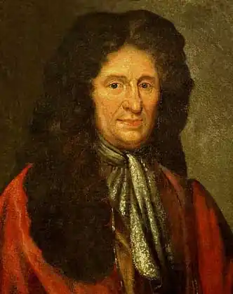
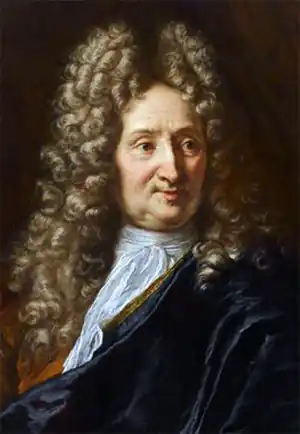

ЛАФОНТЕН, Жан (La Fontaine, Jean de — 08.07. 1621, Шато-Тьєррі, Шампань, нині деп. Ен — 13.04.1695, Париж) —французький поет, член Французької академії з 1684 р.
Народився в сім'ї, що належала до стародавнього роду. Батько був чиновником, перебував на посаді доглядача вод і лісів. Початкову освіту Лафонтен здобув у сільській школі. У дев'ятнадцятилітньому віці готувався до прийняття духовного сану, однак молитви і богослов'я мало цікавлять талановитого юнака, значно більше часу він приділяв читанню галантних романів. Не бажаючи ставати священиком, Лафонтен відмовився від духовної кар'єри і зайнявся правом. У цей час він вивчав античну культуру, знайомився з провідними філософськими та політичними теоріями своєї епохи.
За своїми філософськими поглядами Лафонтен був деїстом, тобто визнавав факт створення Богом світу, але вважав, що далі, після акту створення, світ розвивається за власними законами. В інших філософських питаннях (зокрема, у питанні про природу пізнання та про сутність людини) Лафонтен був послідовником французького філософа XVII ст. П. Гассенді. Філософські погляди Лафонтена, його опозиційні політичні настрої значною мірою спричинили характерне для художньої творчості письменника вільнодумство. Писати Лафонтен почав доволі пізно, коли йому вже виповнилося тридцять три роки. Перші твори письменника, і серед них алегорична поема "Сону Bo"("Le songe de Vaux", 1658-1662), яка зробила його відомим, були значною мірою наслідувальними. Лафонтен зазнав впливу преціозної літератури. Переїхавши у Париж (1657), він зблизився з найвизначнішими класицистами: П. Корнелем, Ж.Б. Мольєром, Ж. Расіном, Н. Буало, з якими зустрічався в аристократичних салонах паризької знаті. Надзвичайна розмаїтість, мальовничість, вишуканість і декоративність — характерні риси творів, написаних у цей період, приміром, першого літературного твору Лафонтена — комедії "Євнух" ("L'Eunuque", 1654). У 1661 р. був заарештований покровитель Лафонтена міністр фінансів Фуке, котрий розграбував королівську казну. Лафонтен намагався заступитися за опального міністра і свого колишнього мецената, чим спричинив невдоволення короля Людовіка XIV. Невдовзі Лафонтена вислали у Лімож. Однак дуже швидко вільнодумний поет знайшов нового покровителя — герцогиню Булонську, завсідником салону якої він став. У герцогині збиралася фрондуюча знать і письменники-лібертени. На цей час припадає написання віршованих новел, що наробили чимало галасу через свою фривольність, перший том яких був опублікований 1665 р. під загальною назвою "Віршовані казки та новели" ("Contes et nouvelles en vers", .665—1685). Віршовані новели стали улюбленим жанром Лафонтена. Він працював над створенням новел упродовж двадцяти років, і одна за одною вихо-дили наступні збірки казок (1671, 1675,1685 pp.). Своєрідності "Казкам" надає створена в них особлива атмосфера веселощів, дотепності, фривольності, які поєднуються з грацією, витонченістю та почуттям міри. У віршованих "Казках" Лафонтен продовжує традиції літератури Відродження, котра зверталася до земних радощів, до чуттєвого кохання, до культу людського розуму. У них виразно проступає критичне ставлення поета до лицемірства і святенництва, характерних для вищих верств французького суспільства XVII ст. Сюжети "Казок" були запозичені Лафонтеном в Апулея, Петронія та інших античних письменників, а також у письменників епохи Відродження від Дж. Боккаччо до Ф. Рабле. Водночас поет обстоював своє право не сліпо переймати ті чи інші сюжети, а творчо переробляти їх відповідно до особливостей свого обдарування. Так, приміром, запозичуючи деякі сюжети з "Декамерона" Боккаччо, Лафонтен прагне перетворити новелу у легкий, невимушений і веселий анекдот, усуваючи елементи дидактизму, властиві новелістиці італійського гуманіста. Прикладом подібного перетворення новели в анекдот може слугувати "Сестра Жанна", у якій ідеться про черницю, котра покаялася у своєму гріховному минулому й тепер вирізняється надзвичайною побожністю і ретельністю у виконанні своїх чернечих обов'язків. Але черниці, яким ставлять у приклад побожність сестри Жанни, заздрять не її покаянню, а її минулому життю, в якому вона зазнала насолоди кохання. Особливою заслугою Лафонтена в європейській літературі є розробка жанру віршованої байки. До Лафонтена письменники-класицисти вважали, що байка є "низьким" жанром, тобто непридатним для вираження серйозного змісту. Перші шість книг байок побачили світ 1688 р. під назвою "Байки Езопа, завіршовані Лафонтеном" ("Fabies d'Esope, mises en vers par M. de La Fontaine"). Остання, дванадцята, книга була надрукована 1694 p. Створювані упродовж багатьох років, байки відобразили зміни у світогляді поета, а також його творчі пошуки. Всі книги байок поєднані цілісним художнім задумом: висміяти вади сучасного суспільства, представити читачеві різні його верстви у сатиричному зображенні. Байки Лафонтена надзвичайно різноманітні за тематикою: одні з них порушують найважливіші філософські проблеми ("Жолудь і Гарбуз", "Звір на Місяці", "Павич, який скаржиться Юноні"), другі дають картину суспільної моралі, політичного життя сучасного Л. суспільства ("Моровиця серед звірів", "Щур і Слон"), треті зображають різні людські слабкості та вади ("Кіт і Старий Щур", "Нічого зайвого", "Дуб і Очерет"). У байках відобразилося вільнодумство Лафонтена, виявився його політичний лібертинаж. Новаторство Лафонтена у розробці жанру байки полягає, зокрема, в її демократизації. Лафонтен вводить у байку нового героя — людину з народу. Письменник оцінює зображувані ним події з точки зору простої людини-трудівника. Народність і демократизм байкарської творчості Лафонтена відчутні і в гострій критиці абсолютистської держави. Лафонтен не лише поглибив зміст байки, надавши йому філософського чи політичного характеру, а й піклувався про досконалість форми. Під пером французького поета байка стала легкою та витонченою. Відточеність художньої форми, нова для цього жанру, досягалася з допомогою різних художніх прийомів: вільною композицією, віршованою формою, введенням авторських відступів, широким використанням діалогів, мовних характеристик, контрасту. Структура байок Лафонтена вирізняється ясністю, простотою й точністю. Як зазначав французький учений XIX ст. І. Тен, байки Лафонтена нагадують драму: в них є експозиція, зав'язка, кульмінація і розв'язка, є діалогічні уривки і властиве для драматургії змалювання характерів через їхні вчинки та мову. Мова байок — жива, розмовна, народна. Поет використовує характерні для просторічної мови звороти й інтонації. Лафонтен — новатор в царині віршування. Багатству та особливому колориту мови відповідає розмаїття ритміки байок. Зміна ритмів зумовлена рухом авторської думки, відповідає її поворотам, підпорядкована змістовій стороні твору. Творчість Лафонтена надзвичайно багатогранна. Поет опановує різноманітні літературні жанри: вірші в дусі "легкої поезії", алегоричну поему, драматичну еклогу, героїчну ідилію, казку та новелу, галантний роман і, зрештою, байку, яка здобула йому всесвітню популярність. Творчий шлях Лафонтена був непростим: від вишуканої, зумисне ускладненої, барокової за стилем, преціозної літератури через класицизм, який став основою творчого методу Лафонтена, до реалістичних тенденцій в казках і байках. Лафонтен належить до найпередовіших письменників XVTI ст. Демократизм, життєвість, національний колорит байки Лафонтена захоплювали Л. Глібова, котрий наслідував його, додаючи свої оригінальні барви. Дослідники згадують переклади чи переспіви творів Лафонтена, здійснені І. Котляревським (вони втрачені). Окремі вірші та байки Лафонтена переклали Я. Вільшенко, М. Терещенко, М. Годованець, І. Світличний, Вс. Ткаченко. В. Триков